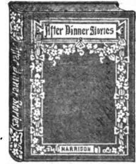

Popular Hand-Books
Description
This section is from the book "Astrology", by M. M. Macgregor. Also available from Amazon: Astrology.
Popular Hand-Books
SOME books are designed for entertainment, others for information, This series combines both features. The information is not only complete and reliable, it is compact and readable. In this busy, bustling age it is required that the information which books contain shall be ready to hand and be presented in the clearest and briefest manner possible, These volumes are replete with valuable information, compact in form and unequalled in point of merit and cheapness. They are the latest as well as the best books on the subjects of which they treat No one who wishes to have a fund of general information or who has the desire for self-improvement can afford to be without them, They are 6x4 1/2 inches in size, well printed on good paper, handsomely bound in green cloth, with a heavy paper wrapper to match.
Goth, each 50 cents.
THE PENN PUBLISHING COMPANY
923 Arch Street, Philadelphia.
Etiquette
By Agnes H. Morton.
There it no passport to good society like good manners. Even though one possess wealth and intelligence, his success in life may be marred by ignorance of social customs. A perusal of this book wiD prevent such blunders. It is a book for everybody, for the social leaders as well as for those less ambitious. The subject is presented in a bright and interesting manner, and represents the latest vogue.
Letter Writing
By Agnes H. Morton.
Why do most persons dislike to write letters? Is it not because they cannot say the right thing in die right place ? This admirable book not only shows by numerous examples just what kind of letters to write, but by directions and suggestions enables the reader to become an accomplished original letter writer. There are forms for all kinds of business and social letters, including invitations, acceptances, letters of sympathy, congratulations, and love letters.
Quotations
By Agnes H. Morton.
A clever compilation of pithy quotations, selected from a great variety of sources, and alphabetically arranged according to the sentiment. In addition to aD the popular quotations in current use, it contains many rare bits of prose and verse not generally found in similar collections.One important feature of the book is found in the characteristic lines from weD known authors, in which the familiar sayings are credited to their original sources.
Epitaphs
By Frederic W. linger.
Even death has its humorous side. There are said to be " sermons in stones/* but when they are tombstones there is many a smOe mixed with the moral. Usually churchyard humor is all the more delightful because it is unconscious, but there are times when it is intentional and none the less amusing. Of epitaphs, old and new, this book contains the best. It is full of quaint bits of obituary fancy, with a touch of the gruesome here and there for a relish.
Proverbs
By John H. Bechtel.
The genius, wit, and spirit of a nation are discovered in its proverbs, and the condensed wisdom of all ages and all nations is embodied in them. 4} A good proverb that fits die case is often a convincing argument This volume contains a representative collection of proverbs, old and new, and the indexes, topical and alphabetical, enable one to find readOy just what he requires.
Things Worth Knowing
By John It. Bechtel.
Can you name the coldest place in the United States or teD what year had 445 days? Do you know how soon the coal fields of the world are likely to be exhausted, or how the speed of a moving train may be told ? What should you do first il you got a cinder m your eye, or your neighbor's baby swallowed a pin ? This unique, up-to-date book answers thousands of just such interesting and useful questions.
A Dictionary Of Mythology
By John H. Bechtel.
Most of us dislike to look up & mythological subject because of the time required. This book remedies that difficulty because in it can be found at a glance just what is wanted.
It is comprehensive, convenient, condensed, and the information is presented in such an interesting manner that when once read it will always be remembered. A distinctive feature of die book is the pronunciation of the proper names, something found in few other works.
Slips Of Speech
By John H. Bechtel.
Who does not make them? The best of us do. Why not avoid them ? Anv one inspired with the spirit of self-improvement may readily do so. No necessity for studying rules of grammar or rhetoric when this book may be had. It teaches both without the study of either. It is a counsellor, a critic, a companion, and a guide, and is written in a most entertaining and chatty style.
Handbook Of Pronunciation
By John H. Bechtel.
What is more disagreeable than a faulty pronunciation? No other defect so clearly shows a lack of culture. This book contains over 5,000 words on which most of us are apt to trip. They are here pronounced in the clearest and simplest manner, and according to the best authority. 4] It is more readily consulted than a dictionary, and is just *s reliable.
Practical Synonyms
By John H. Bechtel.
A new word is a new tool This book wiD not only enlarge your vocabulary, but wiD show you how to express the exact shade of meaning you have in mind, and wiD cultivate a more precise habit of thought and speech. Q It wiD be found invaluable to busy journalists, merchants, lawyers, or clergymen, and as an aid to teachers no less than to the boys and girls under their care.
After-Dinner Stories
By John Harrison.
The dinner itself may be ever so good, and yet prove a failure if there is no mirth to enliven the company. Nothing adds so much zest to an occasion of this kind as a good story wefl told. fl[ Here are hundreds of the latest, best, brightest, and most catchy stories, aD of them short and pithy, and so easy to remember that anyone can teD them successfully. There are also a number of selected toasts suitable to aD occasions.
Toasts
By William Pittenger.
Most men dread being called upon to respond to a toast or to make an ad* dress. Q What would you not give for the ability to be rid of this embarrassment ? No need to give much when you can learn the art from this little book. It wiD teD you how to do it; not only that, but by example it wiD show the way. It is valuable not alone to the novice, but to the experienced speaker, who wiD gather torn it many suggestions.
The Debater's Treasury
By William Plttcnger.
There is no greater ability than the power of skillful and forcible debate, and no accomplishment more readily acquired if the person is properly directed. In this little volume are directions for organizing and conducting debating societies and practical suggestions for all who desire to discuss questions in public.
There is also a list of over 200 questions for debate, with arguments both affirmative andjieganVe.
Punctuation
By Paul Allardyce.
Few persons can punctuate properly; to avoid mistakes many do not punctuate at all A perusal of this book will remove all difficulties and make all points clear. The rules are plainly stated and freely illustrated, thus furnishing a most useful volume. Q The author is everywhere recognized as the leading authority upon the subject, and what he has to say is practical, concise, and comprehensive.
Oratory
By Henry Ward Beecher.
Few men ever enjoyed a wider experience or achieved a higher reputation in public speaking than Mr.
Beecher. What he has to say on this subject was bom of experience, and his own inimitable style was at once both statement and illustration of his theme. This volume is a unique and masterly treatise on the fundamental principles of true oratory.
Conversation
By J. Mahaffy.
Some people are accused of talking too much. But no one is ever taken to task tor talking too weL.
Of all the accomplishments of modem society, that of being an agreeable conversationalist holds first place. Nothing is more delightful or valuable. To suggest what to say, just how and when to say it, is the general aim of this work, and it succeeds most admirably in its purpose.
Reading As A Fine Art
By Ernest Legouve*.
The ability to read aloud wed, whether at the fireside or on the public platform, is a fine art. The directions and suggestions contained in this work of standard authority will go far toward the attainment of this charming accomplishment The work is especially recommended to teachers and others interested in the instruction of public school pupils.
Conundrums
By Dean Rivers.
Conundrums sharpen our wits and lead us to think quickly. They are also a source of infinite amusement and pleasure, whiHng away tedious hours and putting everyone in good humor. This book contains an excellent collection of over a thousand of the latest, brightest, and most up-to-date conundrums, to which are added many BibKcal, poetical, and French conundrums.
Magic
By Ellis Stanyon.
There is no more delightful form of entertainment than that afforded by the performances of a magician. 1$ Mysterious as' these performances appear, they may be very readily learned if carefully explained, This book embraces full and detailed descriptions of all the well known tricks with coins, handkerchiefs, hats, flowers, and cards, together with a number of novelties not previously produced or explained. I Fully akislrated. *.
Hypnotism
By Edward H. Eldridgc, A. M.
There is no more popular or nteresting form of entertainment than hypnotic exhibitions, and everyone would like to know how to hypnotize. By following the simple and concise instructions contained in this complete manual anyone may, with a little practice, readily learn how to exercise this unique and strange power.
Whist
By Cavendish Twenty-third Edition.
"According to Cavendish" is now almost as familiar an expression as "according to Hoyle." No whist player, whether a novice or an expert, can afford to be without the aid and support of Cavendish. No household in which the game is played is complete without a copy of this book. C[ This edition contains all of the matter found in the English publication and at one-fourth the cost.
Continue to: